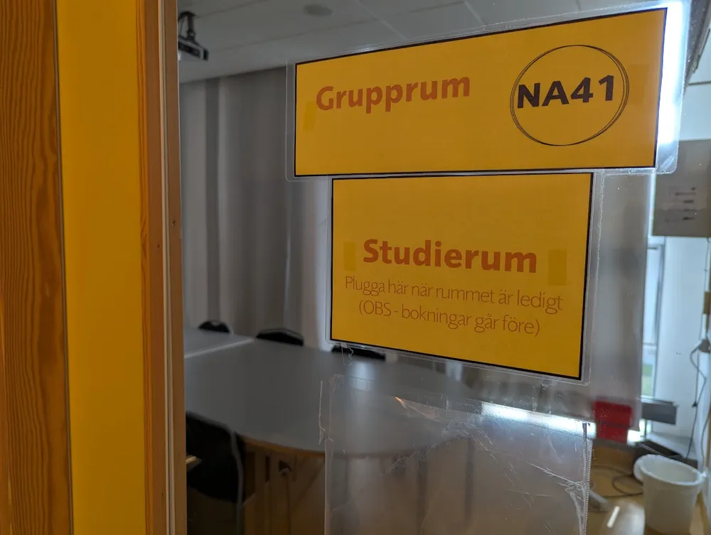

Östra gymnasiet

Studie: Östras elever kan inte planera
En ny studie publicerad av SU finner att över hälften av alla elever på Östra Gymnasiet inte är medvetna om att de har ett prov senare under veckan. Studien visar också att de flesta elever inte får veta när proven är via skolans kanaler, såsom V-klass eller Classroom, utan det vanligaste sättet är att elever hör någon annan elev prata om det kommande provet under en mattelektion. För övrigt hittade studien att det alltid är en eller två personer som får veta när provet efter frågan "är du redo för provet då?". Kan Östras elever helt enkelt inte planera?
Undersökningen tydliggjorde också allvarliga brister i den nuvarande kommunikationskedjan som många elever förlitar sig på. Björn Nils Kornel förklarade under en intervju med Löken hur denna kommunikationskedja vanligtvis ser ut. Först skriver lärare in när provet kommer att vara i sin planering, sedan gör läraren en kort kommentar om det i förbifarten, max en elev plockar upp det, kollar i läroplanen och skriver sedan upp det i sin detaljerade kalender. Sedan närmar sig provet och när det bara är några ynka dagar kvar tills provet nämner eleven att provet snart är här för hela klassen under coachtid, varav halva klassen inte lyssnar eller inte är där. Nils Kornel menar att denna struktur förlitar sig alltför mycket på en duktig elev. Om den personen skulle vara sjuk eller glömma informera klassen skulle konsekvenserna vara förödande, fortsätter han. Nils Kornel sammanfattar att den nuvarande kommunikationskedjan är för bräcklig och förlitar sig för mycket på en enstaka elev.
Men allt är inte förlorat, för undersökningen la också fram några förslag på hur man enklare ska kunna nå fram till Östras ständigt förvirrade elever. Ett av förslagen är att samarbeta med Supercell, utvecklarna av bland annat Clash Royale, för att få skolans provkalender in i spelet. Då skulle elever tvingas konsumera provdatumen. Ett enklare förslag är att istället för att ha en frivillig elev som håller ihop hela klassen så blir det coachernas jobb att informera eleverna om prov i framtiden. Studien påpekar också att det kanske redan är så att det är coachernas jobb men att det är omöjligt att veta. Den mest radikala lösningen som föreslås är att eleverna får lära sig hålla reda på sina egna scheman. Det skulle kräva en omstrukturering av alla elevers hjärnor. Avslutningsvis så finns det många idéer på hur man ska lösa elevernas, men också i grunden skolans, oorganiserade struktur, men kanske är det helt enkelt ett problem som inte går att lösa.